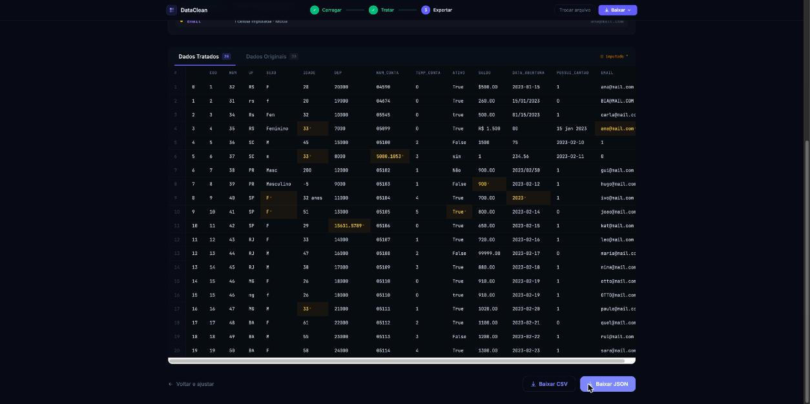
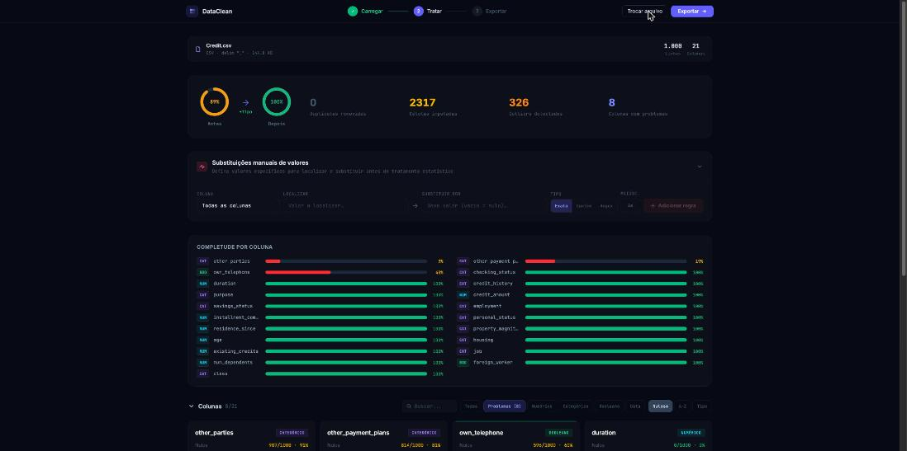

Lista 2 — Exercício 1: Análise crítica do DataClean
Como o DataClean foi testado
O DataClean foi
testado com 23 arquivos: 14 criados com sujeiras típicas (pasta
dados_teste) e 9 bases da disciplina (6 de sala, Credit,
cars e iris). Em cada um, conferi as telas Tratar e Exportar, o arquivo
gerado e o código público do site.
Processos que o DataClean consegue fazer
O DataClean segue 3 telas (Carregar → Tratar → Exportar) e faz, nesta ordem:
- Carrega .csv, .tsv, .txt, .json e .tab (só UTF-8) e
detecta o delimitador (
,;TAB|). - Remove duplicatas idênticas.
- Substitui valores por regras Exato, Contém ou Regex.
- Reconhece nulos por uma lista fixa (vazio, NA, N/A, none, -, ?…).
- Detecta o tipo de cada coluna: número, categoria, booleano ou data.
- Calcula estatísticas: média, mediana, desvio, assimetria de Pearson, quartis, outliers (IQR) e histograma.
- Imputa nulos: média ou mediana conforme a assimetria, moda nas categorias; a estratégia pode ser trocada por coluna.
- Exporta em CSV ou JSON, com comparação antes/depois e log.
O que o DataClean não faz automaticamente
Quase nada da Etapa 3 (Padronização) é feito: o arquivo sai com os mesmos textos e formatos, só com os nulos preenchidos. O DataClean não:
- renomeia nem remove colunas (
df.rename); - converte tipos nem padroniza datas (
astype,pd.to_datetime): tudo sai como texto; - unifica categorias (F/Fem/Feminino, SP/São Paulo) nem limpa textos
(
str.strip,str.lower); - trata outliers nem valores impossíveis (idade 150, desconto de 500%);
- remove linhas ou colunas com muitos nulos (
dropna) nem cria faixas (pd.cut); - lê Excel, outra codificação ou cabeçalho fora da 1ª linha.
Resultados dos testes
Só o iris.csv (já limpo) saiu correto; em 12 dos 23 arquivos houve falha, sempre com qualidade final de 100%.
| Arquivo | Resultado no DataClean | Avaliação |
|---|---|---|
| 01_clientes_banco_sujo.csv | Vírgula entre aspas deslocou colunas e perdeu 3 e-mails; data virou número | Falha |
02_vendas (; e Latin-1) |
Acentos corrompidos; “1.111,78” lido como 1,111 | Falha |
| 03_sensor_serie_temporal.tsv | Data lida como número, então o forward fill não aparece | Parcial |
| 03b_sensor_timestamp.csv | Mesmo problema do arquivo 03 | Parcial |
| 04_produtos_aninhado.json | Descartou 3 colunas; estoque imputado como 10,8 | Parcial |
| 05_notas_pipe.txt | Leu certo, mas não unificou aprovado/APROVADO | Parcial |
| 06_aspas_quebras_linha.csv | 5 registros viraram 6 linhas embaralhadas | Falha |
| 07_grande_100k.csv | 100 mil linhas em 1,4 s, mas trava a cada clique | OK com ressalva |
| 08_cabecalho_problematico.csv | Título virou cabeçalho; sobrou 1 coluna | Falha |
| 08b_colunas_duplicadas.csv | A 2ª coluna “idade” apagou a 1ª | Falha |
| 09_planilha_excel.xlsx | Lido como texto, sem aviso | Falha |
| 10_somente_cabecalho e 10b_vazio | 0 colunas / tela travada | Falha |
| 11_valores_legitimos_como_nulos.csv | “NA” virou “SA”; “none” virou “premium” | Falha |
| Credit.csv | “none” tratado como nulo: 2.317 valores inventados | Falha |
| cars.csv | Índice sem nome não pode ser removido | Parcial |
| iris.csv | 3 duplicatas removidas, 4 outliers apontados | OK |
| Dados.csv | Não unificou F/Feminino; manteve UF “RP” | Parcial |
| exercicio1_vendas.csv | Não unificou SP/São Paulo; manteve desconto de 500% | Parcial |
| exercicio2_rh.csv | 6 grafias de Departamento; idade 150 mantida | Parcial |
| Morbidade (DATASUS) | Título virou cabeçalho; “-” (zero) gerou 497 valores falsos | Falha |
| tempo.csv | Umidade 230 mantida; VE e FAL não unificados | Parcial |
| Titanic.csv | 1.316 passageiros viraram 20 linhas | Falha |

Figura 1 — Arquivo 01: “R$ 1.500,00” partido em duas colunas e e-mail de outra cliente imputado (★).

Figura 2 — Credit.csv: 2.317 células inventadas a partir da categoria “none”.
Principais facilidades
O DataClean torna a exploração e a imputação acessíveis a quem não programa.
- Roda no navegador, sem instalação, e os dados não saem do computador.
- Fluxo simples em 3 telas, automático e rápido.
- Imputação justificada pela assimetria de Pearson, com o motivo escrito.
- Estatísticas e histograma por coluna.
- Estratégia ajustável por coluna e substituições com Regex.
- Comparação antes/depois, células imputadas marcadas e log.
Principais problemas
O pior é alterar dados sem avisar e ainda mostrar 100% de qualidade. Em ordem de gravidade:
- Lê CSV sem respeitar aspas e quebras de linha: desloca colunas e perde dados.
- Nunca reconhece datas, então o forward/backward fill nunca aparece.
- Converte números errado: “1.234,56” vira 1,234, “32 anos” vira 32 e
R$não é reconhecido. - A lista fixa de nulos apaga categorias válidas (“none”, “NA”) e o “-” que significa zero.
- Imputa códigos, e-mails, texto livre e colunas com 91% de nulos.
- Não padroniza categorias, textos, tipos nem nomes de colunas.
- Só conta outliers e aceita valores impossíveis.
- Deduplicação cega: deixa quase-duplicatas e apaga repetições legítimas (Titanic).
- O índice de qualidade só mede preenchimento.
- Leitura frágil e silenciosa: só UTF-8, cabeçalho na 1ª linha, Excel lido como lixo, arquivo vazio trava a tela.
- O CSV exportado usa vírgula e não tem BOM, então abre errado no Excel brasileiro.
Tabela de facilidades e problemas
| Aspecto | Facilidade | Problema |
|---|---|---|
| Uso | No navegador, sem instalação | Erros sem aviso; arquivo vazio trava |
| Leitura | Detecta o delimitador; aceita JSON | Ignora aspas; só UTF-8; não lê Excel |
| Nulos | Imputa por média, mediana ou moda | Inventa valores em categorias válidas e códigos |
| Tipos | Classifica as colunas sozinho | Datas viram números; nada é convertido |
| Padronização | Substituições com Regex | Não unifica categorias nem renomeia colunas |
| Duplicatas | Remove as idênticas | Ignora quase-duplicatas; apaga repetições legítimas |
| Outliers | Detecta por IQR | Não trata nem valida limites |
| Qualidade | Painel antes/depois | Mede só o preenchimento |
| Exportação | CSV e JSON com 1 clique | Tudo como texto; abre errado no Excel brasileiro |
Conclusão
O DataClean serve para explorar e ensinar imputação em arquivos já limpos, mas não é confiável com dados reais: altera dados sem avisar e mostra 100% de qualidade. Os 11 problemas acima orientaram o programa do Exercício 2.